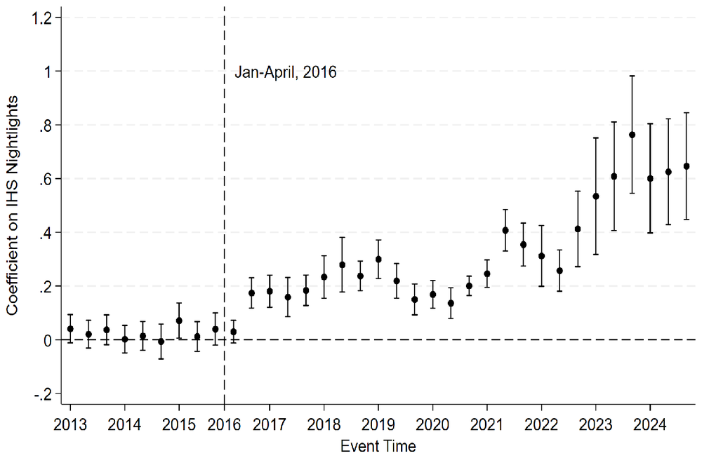
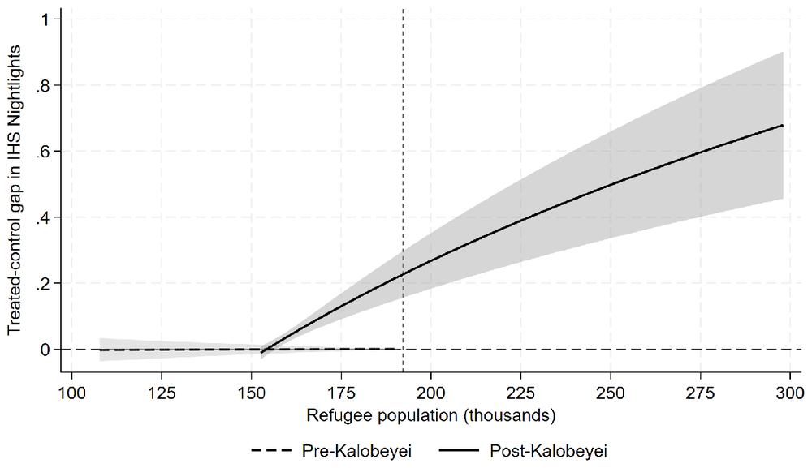

From Strangers to Neighbors
When Kenya stopped keeping refugees apart and let them trade with local people in shared markets, nearby host villages grew. The same refugees brought more benefit to their neighbors once the neighbors could sell to them.
Camps or integration: what does it mean for the hosts?
Governments that receive refugees must choose. They can keep refugees in camps, or let them live, work and trade alongside local people. Most debate is about the refugees themselves. This paper asks about the host communities living next door.
One place, two sets of rules
Kakuma camp in northwest Kenya ran as a closed camp for 24 years. In 2016 the Kalobeyei Integrated Settlement opened next to it, with shared markets where hosts could open shops and sell directly to refugees. Watching the same area before and after this change shows what the rules themselves do.
from distant towns
firewood, charcoal, livestock
stays with local sellers
Lights at night, seen from space
Rural Turkana has little official economic data, so we use NASA satellite images of night-time lights for every host village from 2012 to 2024, combined with monthly refugee counts built from more than 150 UN Refugee Agency (UNHCR) reports. We compare villages within 10 km of the complex with villages farther away, before and after 2016. The two groups moved together before 2016 and separated only after Kalobeyei opened.
Nearby villages got brighter, and kept getting brighter
On average, night-time lights in nearby villages rose by about 33 percent relative to farther villages. The gain grew in each phase of the policy. Villages beyond 10 km showed no change.

More jobs, more spending, more businesses, no price spike
Household surveys point the same way as the satellite.
More refugees helped only after the rules changed
Between 2012 and 2015, Kakuma's refugee population grew by about 75 percent, yet nearby host activity did not rise. After integration, more refugees meant more activity for hosts.
